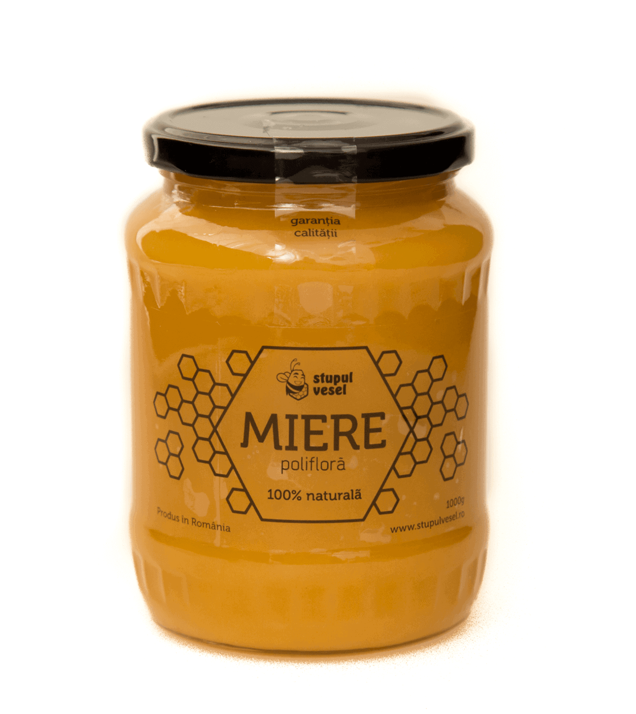
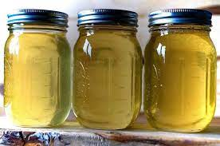

Aici va prezint imagini selectate pentru producerea mierii din 2023
 Mierea facuta in anul 2022
Bun venit pe Site-ul "MiereRo",aici va
Putem prezenta numeroase brand-uri
de miere din toata Romania,si nu doar
din romania
Sunt inca un pusti,dar cu o ambitie foarte
Mare si o curiozitate desavarsita!
Mai jos veti vedea sursa mea de Inspiratie
Eu cand eram mai mic ma intrbamOare ce o sa ma fac cand o sa fiu
,iar acum am raspunsul,Apicultor
Mai mare